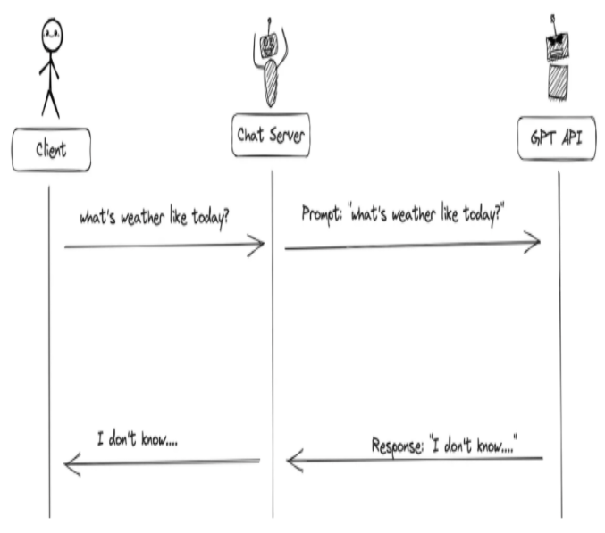
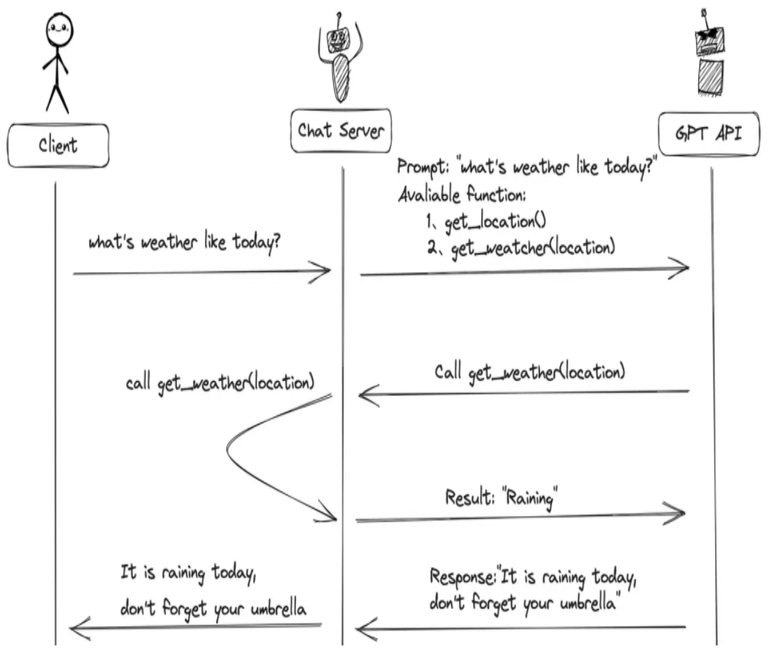

🧰 Function Call：让模型可靠调用工具
工程实践提示：示例中的模型地址、数据库账号和密钥均应通过环境变量或独立配置文件注入；部署前还需补充权限控制、输入校验、超时重试、日志脱敏、来源引用与离线评估。
学习目标
- 熟悉Function Call 概念和工作原理
- 熟悉Function Call 的基本使用
1 什么是Function Call
2023年6月13日 OpenAI 公布了 Function Call（函数调用） 功能，Function Call 允许开发者向 GPT-4 和 GPT-3.5-turbo 模型描述函数，模型会智能地选择输出一个包含调用这些函数参数的JSON对象。这是一种更可靠地将 GPT 的功能与外部工具和 API 相连接的新方法。
那么 Function Call 可以解决大模型什么问题：
- 信息实时性：大模型训练时使用的数据集往往有时间限制，无法包含最新的信息，如最新的新闻、实时股价等。通过Function Call，模型可以实时获取最新数据，提供更加时效的服务。
- 数据局限性：模型的训练数据量庞大但有限，无法覆盖所有可能的查询，如医学、法律等领域的专业咨询。Function Call允许模型调用外部数据库或API，获取特定领域的详细信息。
- 功能扩展性：大模型虽然功能强大，但不可能内置所有可能需要的功能。通过Function Call，可以轻松扩展模型能力，如调用外部工具进行复杂计算、数据分析等。
GPT4 及 GPT-3.5-turbo 模型之所以能够使用函数Function Call 功能，是因为这些模型经过训练，不仅可以检测到何时需要调用函数（根据用户的输入），并且又可以回复符合函数参数的 JSON对象，而不是直接返回常规的文本。
目前支持Function Call功能的模型除了GPT模型外，国内的模型也支持，如：百度文心一言，ChatGLM3-6B、讯飞星火3.0等。
2 Function Call 工作原理
接下来，我们通过举例分别对比有无Function Call功能时GPT模型工作流程的差异：
当没有函数调用(funciton call)时候，我们调用GPT构建AI应用的模式非常简单。
- 主要步骤：
- 用户(client)发请求给我们的服务(chat server)
- 我们的服务(chat server)给GPT提示词
- 重复执行

当有函数调用(funciton call)时候，我们调用GPT构建AI应用的模式比之前要复杂一些。
- 主要步骤：
- 用户(client)发请求提示词，chat server将提示词和可以调用的函数发送给大模型
- GPT模型根据用户的提示词，判断是用普通文本还是函数调用的格式响应我们的服务(chat server)
- 如果是函数调用格式，那么chat server就会执行这个函数，并且将结果返回给GPT
- 然后模型使用提供的数据，用连贯的文本回答

需要注意的是，大模型的Function Call 不会执行任何函数调用，仅返回调用函数所需要的参数 。开发者可以利用模型输出的参数在应用中执行函数调用。
3 Function Call 使用方式
3.1 自定义tool结构
以下代码是通过自定义 json格式的工具schema。
3.1.1 导包
位置：agent_learn/function_call/C01_define_tool.py
from langchain_openai import ChatOpenAI from langchain_core.messages import HumanMessage, ToolMessage from agent_learn.config import Config conf = Config()
3.1.2 定义外部函数
# todo: 第一步：定义工具函数 def add(a: int, b: int) -> int: """ 将数字a与数字b相加 Args: a: 第一个数字 b: 第二个数字 """ return a + b def multiply(a: int, b: int) -> int: """ 将数字a与数字b相乘 Args: a: 第一个数字 b: 第二个数字 """ return a * b
3.1.3 描述函数功能
为了向模型描述外部函数库，需要向 tools 字段传入可以调用的函数列表。参数如下表：
| 参数名称 | 类型 | 是否必填 | 参数说明 |
|---|---|---|---|
| type | String | 是 | 设置为function |
| function | Object | 是 | |
| name | String | 是 | 函数名称 |
| description | String | 是 | 用于描述函数功能，模型会根据这段描述决定函数调用方式。 |
| parameters | Object | 是 | parameters字段需要传入一个Json Schema对象，以准确地定义函数所接受的参数。若调用函数时不需要传入参数，省略该参数即可。 |
| required | 否 | 指定哪些属性在数据中必须被包含。 |
说明如下：
# 定义 JSON 格式的工具 schema
tools = [
{
"type": "function",
"function": {
"name": "add",
"description": "将数字a与数字b相加",
"parameters": {
"type": "object",
"properties": {
"a": {
"type": "integer",
"description": "第一个数字"
},
"b": {
"type": "integer",
"description": "第二个数字"
}
},
"required": ["a", "b"]
}
}
},
{
"type": "function",
"function": {
"name": "multiply",
"description": "将数字a与数字b相乘",
"parameters": {
"type": "object",
"properties": {
"a": {
"type": "integer",
"description": "第一个数字"
},
"b": {
"type": "integer",
"description": "第二个数字"
}
},
"required": ["a", "b"]
}
}
}
]
3.1.4 模型实例化
为方便使用配置，需要创建Config类。
位置：agent_learn/config.py
class Config: def __init__(self): self.base_url = 'https://dashscope.aliyuncs.com/compatible-mode/v1' self.api_key = "<天气 API Key>" self.model_name = 'qwen-plus'
在C01_define_tool.py中实例化模型的代码如下：
# todo: 第二步：初始化模型 llm = ChatOpenAI(base_url=conf.base_url, api_key=conf.api_key, model=conf.model_name, temperature=0.1) # 绑定工具，允许模型自动选择工具 llm_with_tools = llm.bind_tools(tools, tool_choice="auto")
3.1.5 模型调用
# todo: 第三步：调用回复
query = "2+1等于多少？"
messages = [HumanMessage(query)]
try:
# todo: 第一次调用
ai_msg = llm_with_tools.invoke(messages)
messages.append(ai_msg)
print(f"\n第一轮调用后结果：\n{messages}")
# 处理工具调用
# 判断消息中是否有tool_calls，以判断工具是否被调用
if hasattr(ai_msg, 'tool_calls') and ai_msg.tool_calls:
for tool_call in ai_msg.tool_calls:
# todo: 处理工具调用
selected_tool = {"add": add, "multiply": multiply}[tool_call["name"].lower()]
tool_output = selected_tool(**tool_call["args"])
messages.append(ToolMessage(content=tool_output, tool_call_id=tool_call["id"]))
print(f"\n第二轮 message中增加tool_output 之后：\n{messages}")
# todo: 第二次调用，将工具结果传回模型以生成最终回答
final_response = llm_with_tools.invoke(messages)
print(f"\n最终模型响应：\n{final_response.content}")
else:
print("模型未生成工具调用，直接返回文本:")
print(ai_msg.content)
except Exception as e:
print(f"模型调用失败: {str(e)}")
3.1.6 完整代码
from langchain_openai import ChatOpenAI from langchain_core.messages import HumanMessage, ToolMessage from agent_learn.config import Config conf = Config() # todo: 第一步：定义工具函数 def add(a: int, b: int) -> int: """ 将数字a与数字b相加 Args: a: 第一个数字 b: 第二个数字 """ return a + b def multiply(a: int, b: int) -> int: """ 将数字a与数字b相乘 Args: a: 第一个数字 b: 第二个数字 """ return a * b # 定义 JSON 格式的工具 schema tools = [ { "type": "function", "function": { "name": "add", "description": "将数字a与数字b相加", "parameters": { "type": "object", "properties": { "a": { "type": "integer", "description": "第一个数字" }, "b": { "type": "integer", "description": "第二个数字" } }, "required": ["a", "b"] } } }, { "type": "function", "function": { "name": "multiply", "description": "将数字a与数字b相乘", "parameters": { "type": "object", "properties": { "a": { "type": "integer", "description": "第一个数字" }, "b": { "type": "integer", "description": "第二个数字" } }, "required": ["a", "b"] } } } ] # todo: 第二步：初始化模型 llm = ChatOpenAI(base_url=conf.base_url, api_key=conf.api_key, model=conf.model_name, temperature=0.1) # 绑定工具，允许模型自动选择工具 llm_with_tools = llm.bind_tools(tools, tool_choice="auto") # todo: 第三步：调用回复 query = "2+1等于多少？" messages = [HumanMessage(query)] try: # todo: 第一次调用 ai_msg = llm_with_tools.invoke(messages) messages.append(ai_msg) print(f"\n第一轮调用后结果：\n{messages}") # 处理工具调用 # 判断消息中是否有tool_calls，以判断工具是否被调用 if hasattr(ai_msg, 'tool_calls') and ai_msg.tool_calls: for tool_call in ai_msg.tool_calls: # todo: 处理工具调用 selected_tool = {"add": add, "multiply": multiply}[tool_call["name"].lower()] tool_output = selected_tool(**tool_call["args"]) messages.append(ToolMessage(content=tool_output, tool_call_id=tool_call["id"])) print(f"\n第二轮 message中增加tool_output 之后：\n{messages}") # todo: 第二次调用，将工具结果传回模型以生成最终回答 final_response = llm_with_tools.invoke(messages) print(f"\n最终模型响应：\n{final_response.content}") else: print("模型未生成工具调用，直接返回文本:") print(ai_msg.content) except Exception as e: print(f"模型调用失败: {str(e)}")
注意：
llm.invoke(messages, tools=tools, ...): 绑定方式: 直接在 .invoke() 调用中传入 tools 参数。这是一种临时、一次性的绑定方式，仅对本次调用有效。 调用方式: 如果你想再次调用模型并使用工具，你必须在下一次 .invoke() 调用中再次传递 tools 参数。 适用场景: 适用于简单、单次的工具调用需求，
3.2 装饰器tool方式
以下是代码通过装饰器@tool的方式进行工具定义：
定义方式：通过 @tool 装饰器直接装饰一个普通的 Python 函数，比如 add 和 multiply。
工作原理：@tool 装饰器会自动根据函数签名（如 a: int, b: int）和文档字符串生成一个完整的工具定义（schema），包括工具名称、描述和参数结构。
优势：
- 简洁高效：这是最简单、最 Pythonic 的方式，几乎不需要额外的样板代码。你只需编写核心函数逻辑，工具定义部分由框架自动处理。
- 自动化：LangChain 的工具系统会自动处理工具的封装和调用，包括基本的参数类型验证。
代码如下：
位置：agent_learn/function_call/C02_by_annotation.py
from langchain_openai import ChatOpenAI from langchain_core.messages import HumanMessage, ToolMessage from langchain_core.tools import tool from agent_learn.config import Config conf = Config() # todo: 第一步：定义工具函数 @tool def add(a: int, b: int) -> int: """ 将数字a与数字b相加 Args: a: 第一个数字 b: 第二个数字 """ return a + b @tool def multiply(a: int, b: int) -> int: """ 将数字a与数字b相乘 Args: a: 第一个数字 b: 第二个数字 """ return a * b # 定义 JSON 格式的工具 schema tools = [add, multiply] # todo: 第二步：初始化模型 llm = ChatOpenAI(base_url=conf.base_url, api_key=conf.api_key, model=conf.model_name, temperature=0.1) # 绑定工具，允许模型自动选择工具 llm_with_tools = llm.bind_tools(tools, tool_choice="auto") # todo: 第三步：调用回复 query = "2+1等于多少？" messages = [HumanMessage(query)] try: # todo: 第一次调用 ai_msg = llm_with_tools.invoke(messages) messages.append(ai_msg) print(f"\n第一轮调用后结果：\n{messages}") # 处理工具调用 # 判断消息中是否有tool_calls，以判断工具是否被调用 if hasattr(ai_msg, 'tool_calls') and ai_msg.tool_calls: for tool_call in ai_msg.tool_calls: # todo: 处理工具调用 selected_tool = {"add": add, "multiply": multiply}[tool_call["name"].lower()] tool_output = selected_tool.invoke(tool_call["args"]) # 需要使用invoke进行调用 messages.append(ToolMessage(content=tool_output, tool_call_id=tool_call["id"])) print(f"\n第二轮 message中增加tool_output 之后：\n{messages}") # todo: 第二次调用，将工具结果传回模型以生成最终回答 final_response = llm_with_tools.invoke(messages) print(f"\n最终模型响应：\n{final_response.content}") else: print("模型未生成工具调用，直接返回文本:") print(ai_msg.content) except Exception as e: print(f"模型调用失败: {str(e)}")
3.3 pydantic的tool方式
通过严格数据校验pydantic进行工具定义：
定义方式：创建一个继承自 BaseModel 的类，用类型注解和 Field 定义工具的参数。同时，需要在类中手动实现一个 invoke 方法来包含工具的执行逻辑。
工作原理：
- 数据验证：Pydantic 提供了强大的数据验证功能。当工具被调用时，它会自动验证传入的参数是否符合你在
BaseModel中定义的类型和约束。 - 手动实现：与
@tool不同，Pydantic 本身不提供工具的执行逻辑。因此，你必须显式地编写invoke方法来处理参数并返回结果。
优势：
- 强大的数据验证：Pydantic 提供了比
@tool更细粒度和更丰富的参数验证功能，可以定义更复杂的约束。 - 高度可控：由于
invoke方法是手动实现的，你可以完全控制工具的执行逻辑，例如添加复杂的预处理、错误处理或自定义逻辑。 - 清晰的结构：工具的参数定义和执行逻辑被封装在一个类中，使得代码结构更加清晰。
代码如下：
位置：agent_learn/function_call/C03_pydantic.py
from langchain_openai import ChatOpenAI from langchain_core.messages import HumanMessage, ToolMessage from langchain_core.tools import tool """ Pydantic 是一个 Python 库，用于数据验证和序列化。 它通过使用 Python 类型注解（type hints）来定义数据模型， 并提供强大的数据验证功能。Pydantic 基于 Python 的 dataclasses 和 typing 模块， 允许开发者定义结构化的数据模型，并自动验证输入数据是否符合指定的类型和约束。 """ from pydantic.v1 import BaseModel, Field from agent_learn.config import Config conf = Config() # todo: 第一步：定义工具函数 class Add(BaseModel): """ 将两个数字相加 """ a: int = Field(..., description="第一个数字") b: int = Field(..., description="第二个数字") def invoke(self, args): # 验证参数 tool_instance = self.__class__(**args) # 自动验证 a 和 b return tool_instance.a + tool_instance.b class Multiply(BaseModel): """ 将两个数字相乘 """ a: int = Field(..., description="第一个数字") b: int = Field(..., description="第二个数字") def invoke(self, args): # 验证参数 tool_instance = self.__class__(**args) # 自动验证 a 和 b return tool_instance.a * tool_instance.b # 定义 JSON 格式的工具 schema tools = [Add, Multiply] # todo: 第二步：初始化模型 llm = ChatOpenAI(base_url=conf.base_url, api_key=conf.api_key, model=conf.model_name, temperature=0.1) # 绑定工具，允许模型自动选择工具 llm_with_tools = llm.bind_tools(tools, tool_choice="auto") # todo: 第三步：调用回复 query = "2+1等于多少？" messages = [HumanMessage(query)] try: # todo: 第一次调用 ai_msg = llm_with_tools.invoke(messages) messages.append(ai_msg) print(f"\n第一轮调用后结果：\n{messages}") # 处理工具调用 # 判断消息中是否有tool_calls，以判断工具是否被调用 if hasattr(ai_msg, 'tool_calls') and ai_msg.tool_calls: for tool_call in ai_msg.tool_calls: # todo: 处理工具调用 selected_tool = {"add": Add, "multiply": Multiply}[tool_call["name"].lower()] # 实例化工具类并调用 invoke tool_instance = selected_tool(**tool_call["args"]) tool_output = tool_instance.invoke(tool_call["args"]) messages.append(ToolMessage(content=tool_output, tool_call_id=tool_call["id"])) print(f"\n第二轮 message中增加tool_output 之后：\n{messages}") # todo: 第二次调用，将工具结果传回模型以生成最终回答 final_response = llm_with_tools.invoke(messages) print(f"\n最终模型响应：\n{final_response.content}") else: print("模型未生成工具调用，直接返回文本:") print(ai_msg.content) except Exception as e: print(f"模型调用失败: {str(e)}")
总结：
| 特性 | JSON Schema | @tool 装饰器 | Pydantic |
|---|---|---|---|
| 定义方式 | 手动编写 Python 字典（JSON Schema） | 装饰 Python 函数 | 继承 Pydantic BaseModel |
| 自动化程度 | 低：完全手动定义和分发 | 高：自动生成 Schema 和调用逻辑 | 中等：自动验证数据，但需手动实现 invoke |
| 数据验证 | 需要手动验证或依赖外部库 | 基础类型检查 | 强大：提供丰富的验证功能 |
| 适用场景 | 需要与其他系统集成、通用性和最大灵活性的场景 | 快速开发、简单工具、原型验证 | 需要复杂数据验证、清晰结构和自定义逻辑的场景 |
4 Agent 调用 tool
Agent（智能体）是一种能够感知环境、进行决策和执行动作的智能实体。从大模型的角度来看，Agent其实就是基于大模型的语义理解和推理能力，让大模型拥有解决复杂问题时的任务规划能力，并调用外部工具来执行各种任务，并且能够保留“记忆”的一个智能体。
Agent = 大模型 + 任务规划（Planning） + 使用外部工具执行任务（Tools&Action） + 记忆（Memory）
Agent的核心就是大模型，它调用工具的方式通常通过Function Call实现，不够很多的Agent框架对内部的调用过程进行了封装，所以更易使用。
代码如下：
位置：agent_learn/function_call/C04_by_agent.py
from langchain.agents import initialize_agent, AgentType from langchain_openai import ChatOpenAI from langchain_core.tools import tool from agent_learn.config import Config conf = Config() # todo: 第一步：定义工具函数 @tool def add(a: int, b: int) -> int: """ 将数字a与数字b相加 Args: a: 第一个数字 b: 第二个数字 """ return a + b @tool def multiply(a: int, b: int) -> int: """ 将数字a与数字b相乘 Args: a: 第一个数字 b: 第二个数字 """ return a * b # 加载工具 tools = [add, multiply] # todo: 第二步：初始化模型 llm = ChatOpenAI(base_url=conf.base_url, api_key=conf.api_key, model=conf.model_name, temperature=0.1) # todo: 第三步：创建Agent agent = initialize_agent(tools, llm, AgentType.STRUCTURED_CHAT_ZERO_SHOT_REACT_DESCRIPTION, verbose=True) # todo: 第四步：调用Agent query = "2+1等于多少？" result = agent.invoke(query) print(f'result: {result["output"]}')
本节小结
本节主要介绍了Function Call的概念及基本使用。